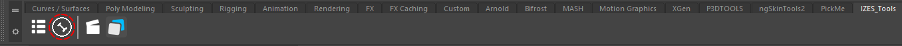

Rigging Tasks
Before Rigging, please check that the hierarchy of the UV file follow the guidelines of the project (More informations can be found here).
Inputs |
Outputs |
|---|---|
Modeling (.abc) |
Rig (.ma) |
- The rigging pipeline step uses the following Maya Plugins:
frankenstein
Characters
This need to be done by hand for maximum control over the animation step.
- note
More infos can come here later.
Props
Many of this can be generated by a automated script. But for checking reason, some steps of this need to be done manually to avoid problems.
- Step:
Open the Asset in the Rig state.
Opening the asste in the Rig piepeline step.
Click on the auto-rig tool.
 The icon for the auto-rig tool is the one with a bone in self of IZES Tools
Result of the script on a demo asset
- note
Please check that the rig is working by moving the main_SRT_global and main_SRT_local controllers.
Publishing the rig without the cache geometry.
Settings to use for publishing the rig
{kind=link}
{kind=link}
{kind=link}
{kind=link}